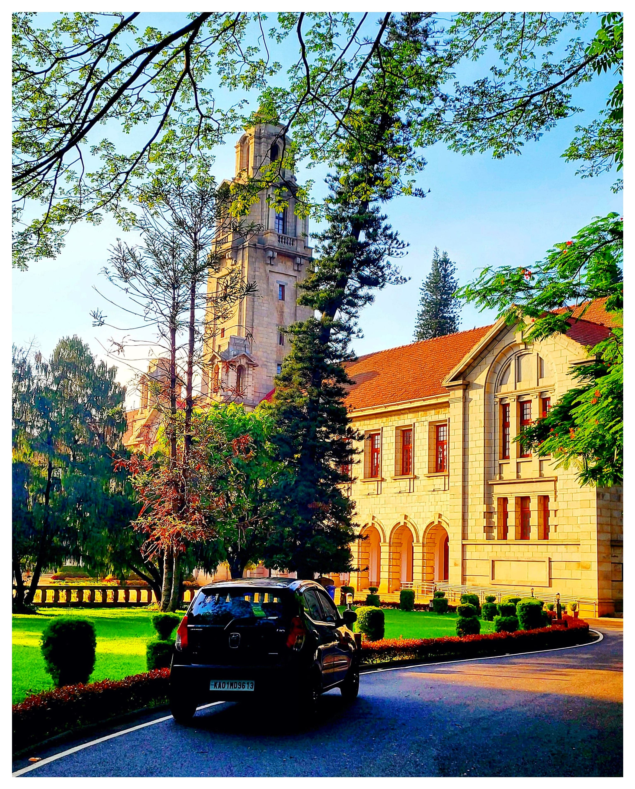

Hello! I'm Saket Kumar, a Master of Business Analytics student in Department of Manangement Studies at the Indian Institute of Science, Bangalore.I'm navigating the exciting world of data science and machine learning. With a toolkit full of advanced analytics, I dive deep into Mathematics, Finance, Operations Research, and Economic theories to uncover insights that drive strategic decisions
